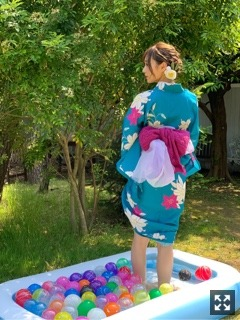
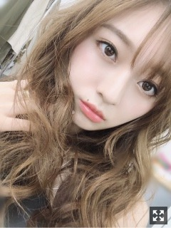
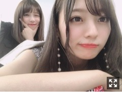
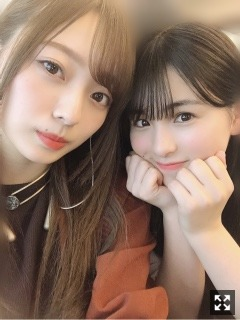

もう７月、下半期突入ですね〜
みなさまこんにちは！
乃木坂46 の
梅澤美波です！！
テレ東音楽祭
ありがとうございました！
Sing Out！、そしてメドレーで
シンクロニシティ、ジコチューで行こう！を
披露させて頂きました
緊張しましたがとても楽しかった〜
さてさて！
真夏の全国ツアーが
もうすぐそこまで迫ってきています！
ツアーが始まると夏が来たな〜って
実感します。楽しみですね〜
昨日の握手会でも
見所だったり注目ポイントだったり
聞いてくださる方が沢山いたのですが
あえて何も答えず お楽しみ〜！とだけ伝えました。（笑）
ツアーならではの醍醐味も
たくさんあるかと思います！
楽しみにしていただけたらと思います！
去年は神宮スタートでしたが
今年は名古屋から周り、
神宮でラストを飾ります！！
神宮へ勢いを繋げるように
まずは名古屋から盛り上げていけるよう
楽しんでパフォーマンスしたいと思います！
いや〜！楽しみだ！
一緒に盛り上がりましょう〜〜
そしてツアーも始まりますが、
７月５日からは
乃木坂46 のドキュメンタリー映画
「いつのまにか、ここにいる」が
公開になります！ぱちぱち
ドキュメンタリー映画第二弾を創ると聞いた時からどのくらい経ったのだろう、、
とにかくあっという間でした！
一足お先に観せて頂きました。
色んな涙が溢れました。
心動かされる瞬間が場面がたくさんありました。
実際に自分の目で観た瞬間も
映像となってスクリーンの中に映し出されていて不思議な感覚になりました
懐かしさを感じたり、
初めて知ったことだったり。
先月の２５日には
飛鳥さん、真夏さん、高山さん、与田と
映画完成披露上映会にも参加させて頂きました。
中々こういう機会も無いですし
初めてファンの方にこの映画届く日でもあったので緊張しましたが
映画の良さが伝えられてたらなあと思います。
映画を観てくださった方一人一人の受け取り方があって
どのように人の心に響く映画になるのか
まだ想像がつきませんが、
ぜひ沢山の方に観ていただきたいと思います。
そして、ぜひ、
感想を聞かせてください( '-' )
週刊少年チャンピオンにて
表紙巻頭を務めさせて頂きました！

去年はピンクの浴衣、
今年は青の浴衣で撮影して頂きました！
お花の大柄がとても素敵でした。
この撮影日が今年初浴衣でした( '-' )
去年表紙を務めさせて頂いた時と
スタッフさんも同じだったので
物凄く居心地良くて笑顔たくさんあふれる現場でした。
私が好きな曲流してくださったり
撮影後は皆さんとご飯食べたり
終始るんるんだったな〜( '-' )
観てくださった皆様
ありがとうございました！

とある撮影の日の一枚。
巻き方もいつもと違うぐりんぐりん！
大人っぽくしていただきました〜
髪色明るくてビックリしてます
色落ちの最高到達点です（笑）
今は染めて暗めです〜
最近はある新しいことに
チャレンジしています。
未知の世界です。
手探り状態です。
自分で探りながらなにを参考にするでもなく。
難しいけどこういう時間が
今の私には必要なんだ〜！と思いました。
真っ白の状態から
自分なりに色付けしていく楽しさを感じながら
作業を進めています。
楽しさも難しさも歯痒さも感じますが
その感覚が今は有難い！
新しい何かを手にして
目標へ進めていく作業が楽しくて仕方がないです。
また報告できる日が来るかと思います！
待っていてください◎

与田さま。かわい。
カメラに気づいてこんなキュートなポーズしてくれた。きゅん
舞台「SLANG」観劇してきました。
井上さんのお芝居に
涙しました、本当に素敵だったなあ。
去年近くでお芝居できたことが
本当に私の宝物です。
あるシーンで一番涙が溢れました、
井上さんの紡ぐ言葉が丁寧で繊細でどこか棘があるようで、、
ああ、かっこよかったなあ。
「七つの大罪 The STAGE」で共演した
有澤さん、北村さんも出演されていました。
とっても素敵でした！！
演出にも物凄く衝撃を受けました。
最後鳥肌だったなあ。
どこか嫉妬してしまうくらいの
素敵な作品でした。

ももこ〜
かわいいポーズしてます、ふふ
お祭り行こうね〜
ではでは
また更新します
昨日の握手会の写真も
おやすみなさい。
占いで忠告して頂けたので
梅澤きっともう大丈夫だと信じています◎
この結果を聞いて注意すれば
占い結果を変えることも出来ると教えてくださいました( '-' )
どこか怖くて
おみくじも中々引けない梅澤なので
本気で落ち込みましたが（笑）
きっと大丈夫と信じて下半期も頑張るぞ〜！
Original：https://www.nogizaka46.com/s/n46/diary/detail/51478?ima=4943&cd=MEMBER